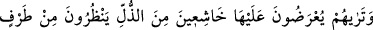
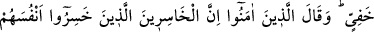
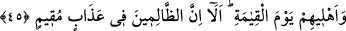
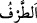

“azâbı gördükleri zaman zâlimlerin” müşriklerin ve âsîlerin “dönecek bir yol var mı”
ki o yola girelim de azaptan kurtulalım. Yahut bir daha dünyaya dönüş yolu var mı ki
önce yaptığımızdan başkasını yapalım? “dediklerini görürsün.”
“Azâbı gördükleri zaman” ifâdesinde kullanılan mâzi kalıbı, işin kesinlikle
gerçekleşeceğine delâlet etmek içindir.
“Dönüş yolu” ifâdesi red mânâsında olup dünyaya dönüş demektir. Yani hiçbir cadde
ya da yol var mı ki gidelim de ölüm için gerekli olan îman ve sâlih amel tedarik
edelim? demektir. Bu ifâdenin açıklaması, “şimdi şu ateşten çıkmak için bize bir yol
var mı acaba?” (el-Mümin 40/11) âyetinde geçmiştir.
45. Ateşe arz olunurlarken onların, zilletten başlarını öne eğerek göz ucuyla gizli
gizli baktıklarını göreceksin. İnananlar da: İşte asıl ziyana uğrayanlar, kıyâmet
günü kendilerini ve âilelerini ziyâna sokanlardır, diyecekler. Kesinlikle biliniz ki,
zalimler, sürekli bir azap içindedirler.
Ey görmek şânından olan insan “ateşe arz olunurken onların” cehennemden
korkmaları ve içine düştükleri “zilletten” dolayı “başlarını öne eğerek” hırsızlama bir
bakışla “göz ucuyla gizli gizli baktıklarını göreceksin.” Allah yolunda hakkıyla cihâd
edip Allah katında kazanç sağlayan “inananlar da: İşte asıl ziyâna uğrayanlar,”
dünyada nefsin şehevât cehenneminde diz çöküp “kıyâmet günü kendilerini ve
âilelerini” ebedî azâba sunarak “ziyâna sokanlardır. Kesinlikle biliniz ki, zâlimler”
âhirette “sürekli” ebedî “bir azap içindedirler.”
Bir önceki âyette geçen “azap” kelimesi, burada onların sunuldukları şeyin “ateş”
olduğuna delâlet etmektedir. Ateşe sunulmanın îzâhı ise Mümin sûresi 46. âyetin
tefsirinde “ruhlarının yakılıp, ateşle işkence edilmesi” olarak anlatılmıştır.
“Zilletten başlarını öne eğmiş vaziyette…” Yani içine düştükleri ve kendilerini
kaplayan zillet ve alçaklıktan dolayı başlarını öne eğmiş, hakîr ve zelîl bir vaziyette.
“Göz ucuyla gizli gizli bakarlar” ifâdesinde yer alan “__WORD__/tarf” kelimesi aslında
masdar olup “göz kapağını hareket ettirmek” demektir. Bununla “bakış” kasdedilmiştir.
Çünkü göz kapağını hareket ettirmek bakışı gerektiren bir durumdur. Müfredat’ta da
böyledir.
Mânâ şudur: Bunlar, göz kapaklarının zayıf bir hareketiyle nazarları ateşe temas edip
cehennem korkusuyla ve içine düştükleri zilletten dolayı ancak gizlice hırsızlama bir
bakış yaparlar. Bu bakış, ölüme arzedilen kişinin kılıca bakması gibidir. Çünkü kişi bu